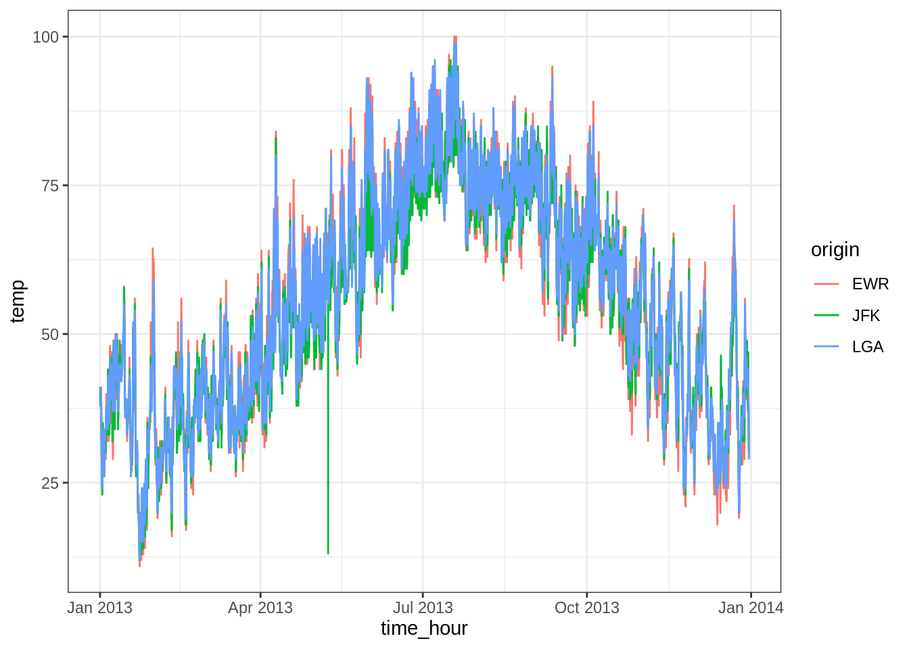
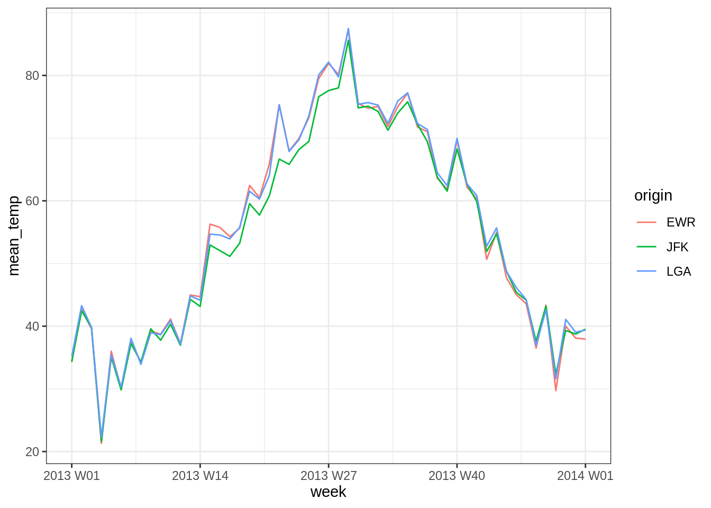
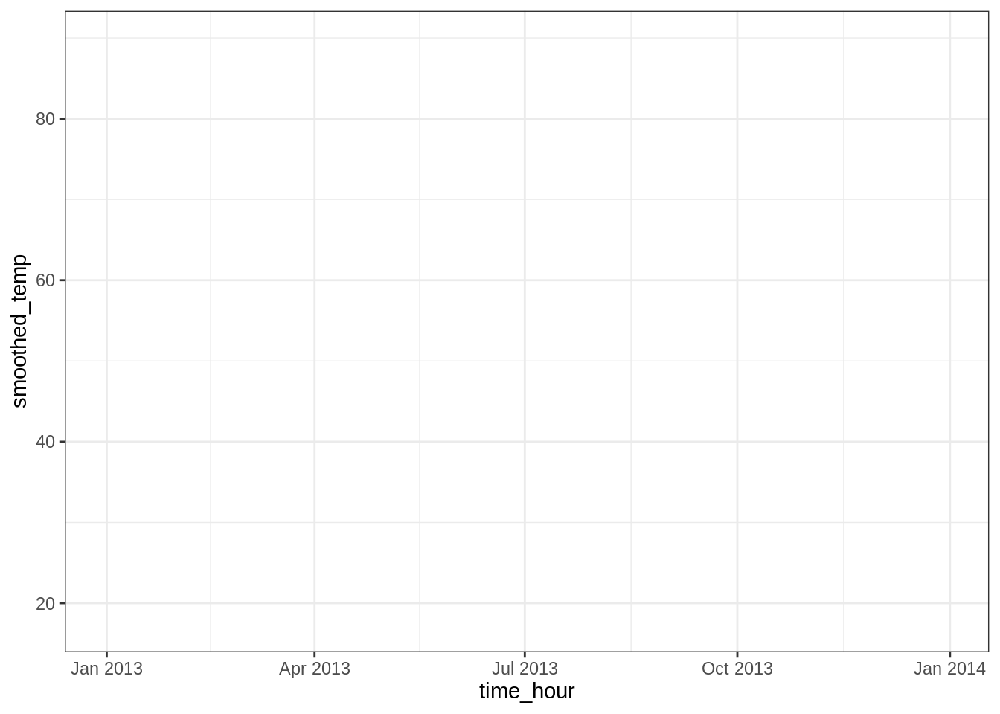
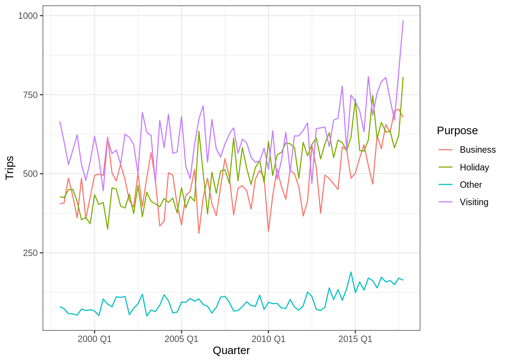
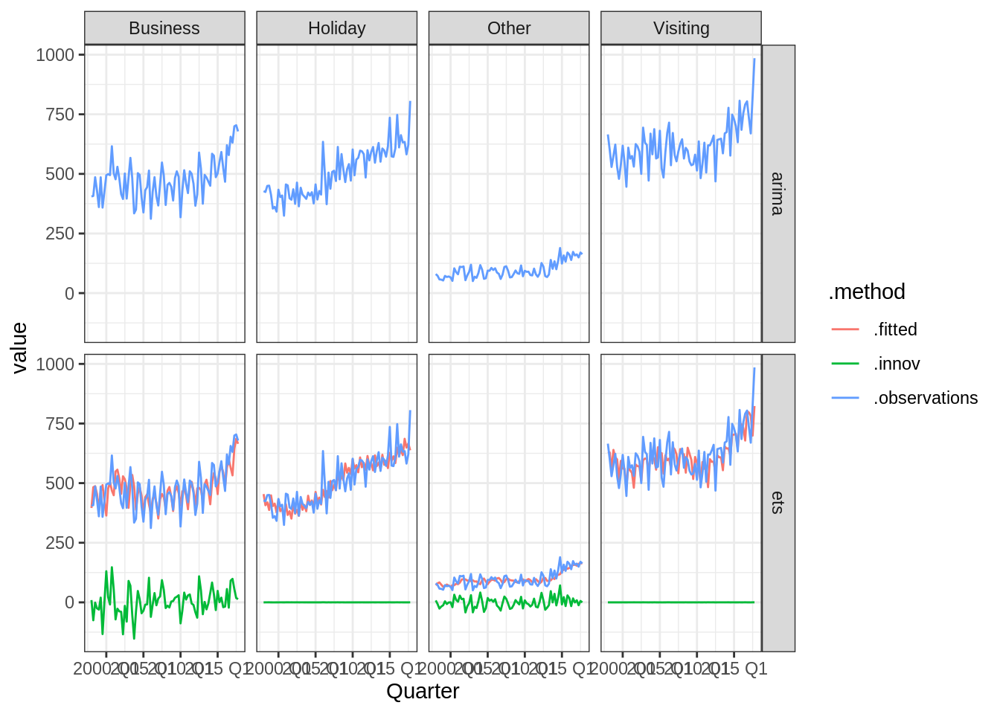
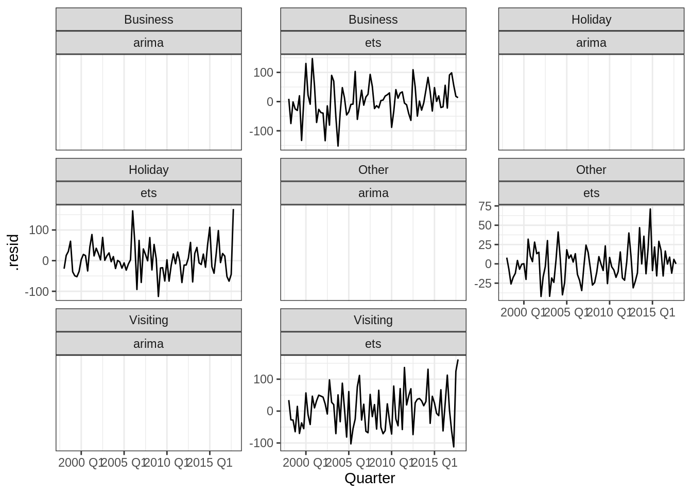
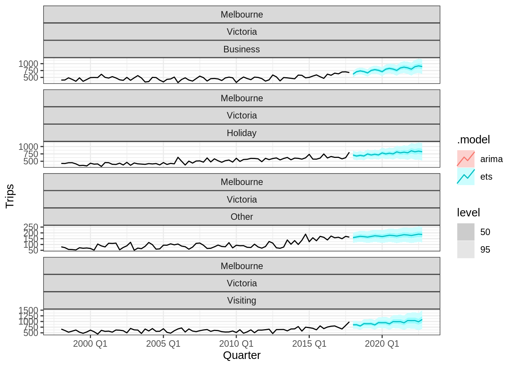

tidylibrary(tidyverse)
library(tsibble) # Handling time series tibbleweather <- nycflights13::weather %>%
dplyr::select(origin, time_hour, temp, humid, precip)
weather## # A tibble: 26,115 x 5
## origin time_hour temp humid precip
## <chr> <dttm> <dbl> <dbl> <dbl>
## 1 EWR 2013-01-01 01:00:00 39.0 59.4 0
## 2 EWR 2013-01-01 02:00:00 39.0 61.6 0
## 3 EWR 2013-01-01 03:00:00 39.0 64.4 0
## 4 EWR 2013-01-01 04:00:00 39.9 62.2 0
## 5 EWR 2013-01-01 05:00:00 39.0 64.4 0
## 6 EWR 2013-01-01 06:00:00 37.9 67.2 0
## 7 EWR 2013-01-01 07:00:00 39.0 64.4 0
## 8 EWR 2013-01-01 08:00:00 39.9 62.2 0
## 9 EWR 2013-01-01 09:00:00 39.9 62.2 0
## 10 EWR 2013-01-01 10:00:00 41 59.6 0
## # … with 26,105 more rowsOn a une colonne temporelle et différentes colonnes d’attributs. On s’intéresse aux températures de trois aéroports.
ggplot(weather) +
aes(y = temp, x = time_hour) +
geom_path(aes(color = origin))
L’idée de tsibble est de créer un tableaux de série(s) temporelle(s). À partir d’un tibble, on utilisera la fonction as_tsibble. Cette fonction permet de traiter “spécialement” la colonne date.
Important: Dans un tsibble, il ne peut pas y avoir deux dates identiques. Du coup, ici, comme des dates sont répétées pour différents aéroports, on spécifiera que la colonne correspondante (origin) est une clé de référence.
weather_tsbl <- as_tsibble(x = weather, # Tableau
key = origin, # Clé d'identification
index = time_hour, # Date
regular = TRUE ) # On spécifie que c'est régulier
weather_tsbl## # A tsibble: 26,115 x 5 [1h] <America/New_York>
## # Key: origin [3]
## origin time_hour temp humid precip
## <chr> <dttm> <dbl> <dbl> <dbl>
## 1 EWR 2013-01-01 01:00:00 39.0 59.4 0
## 2 EWR 2013-01-01 02:00:00 39.0 61.6 0
## 3 EWR 2013-01-01 03:00:00 39.0 64.4 0
## 4 EWR 2013-01-01 04:00:00 39.9 62.2 0
## 5 EWR 2013-01-01 05:00:00 39.0 64.4 0
## 6 EWR 2013-01-01 06:00:00 37.9 67.2 0
## 7 EWR 2013-01-01 07:00:00 39.0 64.4 0
## 8 EWR 2013-01-01 08:00:00 39.9 62.2 0
## 9 EWR 2013-01-01 09:00:00 39.9 62.2 0
## 10 EWR 2013-01-01 10:00:00 41 59.6 0
## # … with 26,105 more rowsPar défaut, il y a un groupement par l’index (ici chaque heure). Par exemple, le code suivant donne la moyenne par heure (tous aéroports confondus).
weather_tsbl %>%
summarise(
temp_mean = mean(temp, na.rm = TRUE),
)## # A tsibble: 8,714 x 2 [1h] <America/New_York>
## time_hour temp_mean
## <dttm> <dbl>
## 1 2013-01-01 01:00:00 39.3
## 2 2013-01-01 02:00:00 39.7
## 3 2013-01-01 03:00:00 40.0
## 4 2013-01-01 04:00:00 40.3
## 5 2013-01-01 05:00:00 39.3
## 6 2013-01-01 06:00:00 38.6
## 7 2013-01-01 07:00:00 39.3
## 8 2013-01-01 08:00:00 39.9
## 9 2013-01-01 09:00:00 39.9
## 10 2013-01-01 10:00:00 40.6
## # … with 8,704 more rowsOn peut toujours grouper par la clé (les aéroports).
weather_tsbl %>%
group_by_key() %>% # Equivalent à group_by(origin)
summarise(
temp_mean = mean(temp, na.rm = TRUE),
)## # A tsibble: 26,115 x 3 [1h] <America/New_York>
## # Key: origin [3]
## origin time_hour temp_mean
## <chr> <dttm> <dbl>
## 1 EWR 2013-01-01 01:00:00 39.0
## 2 EWR 2013-01-01 02:00:00 39.0
## 3 EWR 2013-01-01 03:00:00 39.0
## 4 EWR 2013-01-01 04:00:00 39.9
## 5 EWR 2013-01-01 05:00:00 39.0
## 6 EWR 2013-01-01 06:00:00 37.9
## 7 EWR 2013-01-01 07:00:00 39.0
## 8 EWR 2013-01-01 08:00:00 39.9
## 9 EWR 2013-01-01 09:00:00 39.9
## 10 EWR 2013-01-01 10:00:00 41
## # … with 26,105 more rowsEvidemment, on peut vouloir faire des résumés sur un période donnée. Pour ça, il faut utiliser la fonction index_by et la fonction de regroupement adaptée (voir help(index_by)).
weather_tsbl %>%
group_by_key() %>% # Equivalent à group_by(origin)
index_by(week = ~ yearweek(.)) %>% # Voir help(index_by) pour les périodes possibles
summarise(
mean_temp = mean(temp, na.rm = TRUE),
) %>%
ggplot(aes(x = week, y = mean_temp)) +
geom_path(aes(color = origin))
La fonction filter_index permet de filtrer sur les périodes.
Par exemple, si on s’intéresse spécifiquement aux mois d’Octobre et Novembre:
weather_tsbl %>%
filter_index("2013-10" ~ "2013-11") # Voir help(filter_index) pour ## # A tsibble: 2,212 x 5 [1h] <America/New_York>
## # Key: origin [3]
## origin time_hour temp humid precip
## <chr> <dttm> <dbl> <dbl> <dbl>
## 1 EWR 2013-10-01 00:00:00 59 83.3 0
## 2 EWR 2013-10-01 01:00:00 57.9 86.6 0
## 3 EWR 2013-10-01 02:00:00 57.9 83.8 0
## 4 EWR 2013-10-01 03:00:00 57.0 83.2 0
## 5 EWR 2013-10-01 04:00:00 55.9 86.5 0
## 6 EWR 2013-10-01 05:00:00 53.1 89.3 0
## 7 EWR 2013-10-01 06:00:00 55.0 89.4 0
## 8 EWR 2013-10-01 07:00:00 57.0 86.6 0
## 9 EWR 2013-10-01 08:00:00 63.0 70.1 0
## 10 EWR 2013-10-01 09:00:00 69.1 58.6 0
## # … with 2,202 more rows# la spécification de période (notamment multiples périodes non connexes)Si on veut lisser, on a les fonctions du package slider (qui remplace les fonctions de tsibble dépréciées).
Par exemple, si on veut lisser sur 100 heures.
library(slider) ##
## Attaching package: 'slider'## The following objects are masked from 'package:tsibble':
##
## pslide, pslide_chr, pslide_dbl, pslide_dfc, pslide_dfr, pslide_int,
## pslide_lgl, slide, slide_chr, slide_dbl, slide_dfc, slide_dfr,
## slide_int, slide_lgl, slide2, slide2_chr, slide2_dbl, slide2_dfc,
## slide2_dfr, slide2_int, slide2_lgl# Lissage sur 10h
weather_tsbl %>%
group_by_key() %>% # Groupement par aeroport
mutate(smoothed_temp = slider::slide_dbl(temp, .f = mean,
.before = 50, .after = 50)) %>%
ggplot(aes(x = time_hour, y = smoothed_temp)) +
geom_path(aes(color = origin))
fablelibrary(tidyverse)
library(tsibble)
library(fable)tourism_melb <- tourism %>%
filter(Region == "Melbourne")
tourism_melb %>%
ggplot(aes(x = Quarter, y = Trips)) +
geom_path(aes(color = Purpose)) 
On peut ajuster différents modèles de séries temporelles. Cet ajustement est fait via la fonction model du package fabletools. L’objet résultant est un mable (tableau de modèles).
fitted_mable <- tourism_melb %>%
fabletools::model(
ets = ETS(Trips ~ trend("A") + season("A", period = 4)),
arima = ARIMA(Trips)
)## Warning: 4 errors (1 unique) encountered for arima
## [4] The `feasts` package must be installed to use this functionality. It can be installed with install.packages("feasts")fitted_mable## # A mable: 4 x 5
## # Key: Region, State, Purpose [4]
## Region State Purpose ets arima
## <chr> <chr> <chr> <model> <model>
## 1 Melbourne Victoria Business <ETS(A,A,A)> <NULL model>
## 2 Melbourne Victoria Holiday <ETS(M,A,A)> <NULL model>
## 3 Melbourne Victoria Other <ETS(A,A,A)> <NULL model>
## 4 Melbourne Victoria Visiting <ETS(M,A,A)> <NULL model>Pour chaque modèle, on peut analyser les coefficients:
fitted_mable %>%
dplyr::select(Region, State, Purpose, ets) %>%
coef()## # A tibble: 32 x 6
## Region State Purpose .model term estimate
## <chr> <chr> <chr> <chr> <chr> <dbl>
## 1 Melbourne Victoria Business ets alpha 0.235
## 2 Melbourne Victoria Business ets beta 0.0224
## 3 Melbourne Victoria Business ets gamma 0.000100
## 4 Melbourne Victoria Business ets l 450.
## 5 Melbourne Victoria Business ets b 5.44
## 6 Melbourne Victoria Business ets s0 1.50
## 7 Melbourne Victoria Business ets s1 37.9
## 8 Melbourne Victoria Business ets s2 19.9
## 9 Melbourne Victoria Holiday ets alpha 0.0308
## 10 Melbourne Victoria Holiday ets beta 0.0308
## # … with 22 more rowsOn peut représenter les prédictions par le modèle:
fitted_mable %>%
augment() %>%
dplyr::select(-Region, -State, -.resid) %>%
rename(.observations = Trips) %>%
gather(-Purpose, -.model, - Quarter, key = ".method", value = "value") %>%
ggplot(aes(x = Quarter, y = value, color = .method)) +
geom_path() +
facet_grid(.model ~ Purpose)## Warning: Removed 160 row(s) containing missing values (geom_path).
ou encore les résidus (on remarquera ici qu’il semble y avoir une incohérence entre les prédictions ci-dessus et le calcul des résidus ci-dessous).
fitted_mable %>%
augment() %>%
ggplot(aes(x = Quarter, y = .resid)) +
geom_path() +
facet_wrap(~ Purpose + .model, scale = "free_y")## Warning: Removed 80 row(s) containing missing values (geom_path).
Enfin, on peut créer un tableau de prédiction (ou fable):
forecast_fable <- fitted_mable %>%
forecast(h = "5 years")
forecast_fable## # A fable: 160 x 7 [1Q]
## # Key: Region, State, Purpose, .model [8]
## Region State Purpose .model Quarter Trips .mean
## <chr> <chr> <chr> <chr> <qtr> <dist> <dbl>
## 1 Melbourne Victoria Business ets 2018 Q1 N(619, 3533) 619.
## 2 Melbourne Victoria Business ets 2018 Q2 N(709, 3766) 709.
## 3 Melbourne Victoria Business ets 2018 Q3 N(738, 4042) 738.
## 4 Melbourne Victoria Business ets 2018 Q4 N(713, 4364) 713.
## 5 Melbourne Victoria Business ets 2019 Q1 N(664, 4735) 664.
## 6 Melbourne Victoria Business ets 2019 Q2 N(755, 5159) 755.
## 7 Melbourne Victoria Business ets 2019 Q3 N(784, 5640) 784.
## 8 Melbourne Victoria Business ets 2019 Q4 N(759, 6181) 759.
## 9 Melbourne Victoria Business ets 2020 Q1 N(710, 6786) 710.
## 10 Melbourne Victoria Business ets 2020 Q2 N(800, 7458) 800.
## # … with 150 more rowsOn notera que la prédiction est de la classe distribution du package distributional (voir le travail d’Antoine). On peut ainsi utiliser les fonctionnalités de ce package pour obtenir les intervalles de confiance.
forecast_fable %>%
hilo(level = c(70, 95))## # A tsibble: 160 x 9 [1Q]
## # Key: Region, State, Purpose, .model [8]
## Region State Purpose .model Quarter Trips .mean `70%`
## <chr> <chr> <chr> <chr> <qtr> <dist> <dbl> <hilo>
## 1 Melbo… Vict… Busine… ets 2018 Q1 N(619, 3533) 619. [556.9562, 680.1666]70
## 2 Melbo… Vict… Busine… ets 2018 Q2 N(709, 3766) 709. [645.4872, 772.6996]70
## 3 Melbo… Vict… Busine… ets 2018 Q3 N(738, 4042) 738. [672.5729, 804.3587]70
## 4 Melbo… Vict… Busine… ets 2018 Q4 N(713, 4364) 713. [644.9799, 781.9091]70
## 5 Melbo… Vict… Busine… ets 2019 Q1 N(664, 4735) 664. [592.7150, 735.3526]70
## 6 Melbo… Vict… Busine… ets 2019 Q2 N(755, 5159) 755. [680.1205, 829.0112]70
## 7 Melbo… Vict… Busine… ets 2019 Q3 N(784, 5640) 784. [706.1009, 861.7756]70
## 8 Melbo… Vict… Busine… ets 2019 Q4 N(759, 6181) 759. [677.4317, 840.4021]70
## 9 Melbo… Vict… Busine… ets 2020 Q1 N(710, 6786) 710. [624.1262, 794.8863]70
## 10 Melbo… Vict… Busine… ets 2020 Q2 N(800, 7458) 800. [710.5307, 889.5459]70
## # … with 150 more rows, and 1 more variable: `95%` <hilo>Il existe également une représentation automatique du fable via autoplot:
forecast_fable %>%
autoplot(tourism_melb, level = c(50, 95))## Warning in max(ids, na.rm = TRUE): no non-missing arguments to max; returning
## -Inf
## Warning in max(ids, na.rm = TRUE): no non-missing arguments to max; returning
## -Inf
## Warning in max(ids, na.rm = TRUE): no non-missing arguments to max; returning
## -Inf
## Warning in max(ids, na.rm = TRUE): no non-missing arguments to max; returning
## -Inf
## Warning in max(ids, na.rm = TRUE): no non-missing arguments to max; returning
## -Inf
## Warning in max(ids, na.rm = TRUE): no non-missing arguments to max; returning
## -Inf
## Warning in max(ids, na.rm = TRUE): no non-missing arguments to max; returning
## -Inf
## Warning in max(ids, na.rm = TRUE): no non-missing arguments to max; returning
## -Inf## Warning: Removed 80 row(s) containing missing values (geom_path).